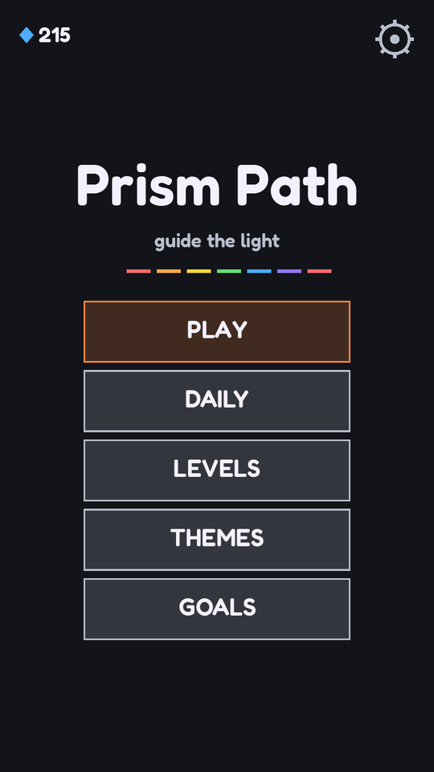
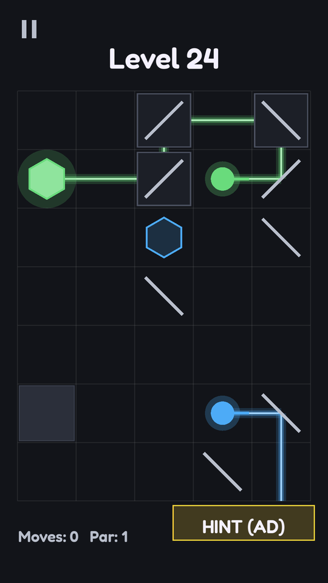
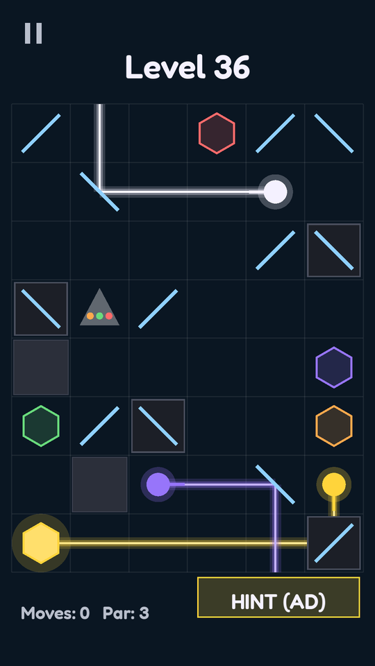

Puzzle · Android
Prism Path
Turn the mirrors and send each beam of light to the crystal of the same color. Light every crystal to finish the level. Calm, clever and a little different on every board.



Features
- 105 journey levelsSeven worlds, one for each chakra color. Boards grow from a handful of mirrors to busy light mazes.
- PrismsFrom level 31, white light splits into three colored beams. Send every color to its crystal.
- Daily puzzleA new board every day with a streak counter and bonus shards.
- Soft glass soundsEvery crystal rings its own note, and a finished level becomes a chord.
- Themes and goalsSix themes to unlock with shards, daily quests and twelve achievements.
- English and TurkishOptional rewarded hints. No pushy pop-ups.